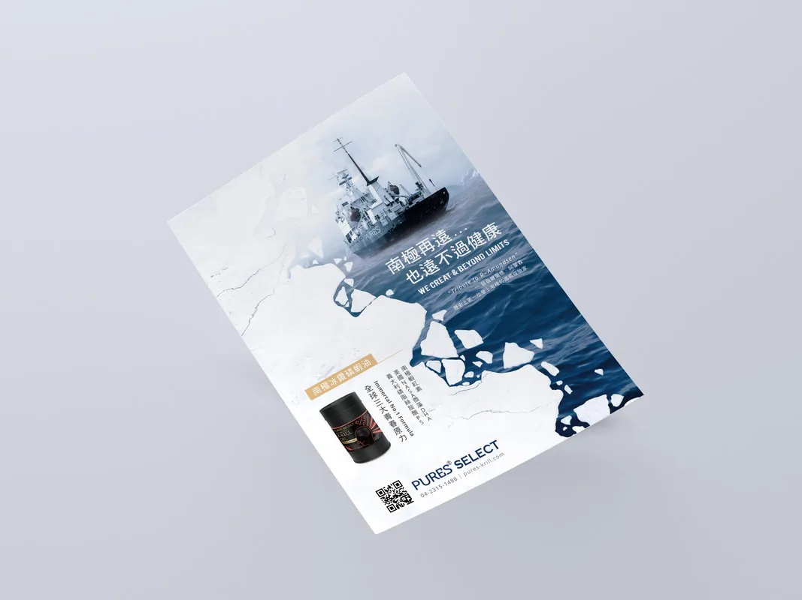
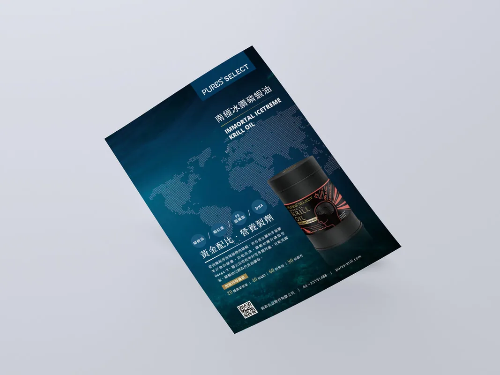
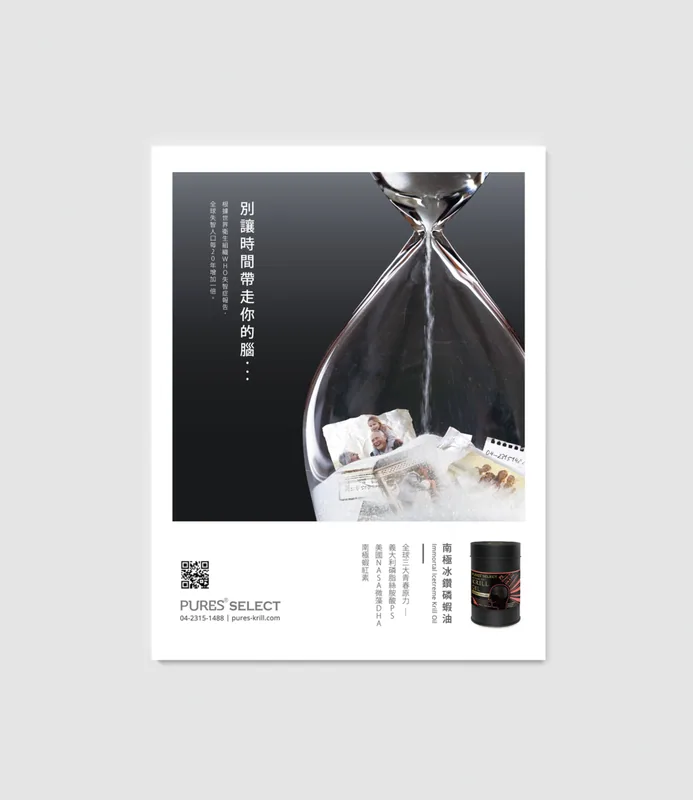

平面設計 ／ Print Design
純萃生技2016媒體露出、雜誌稿
PRINT ADVERTISEMENTS FOR PURES BIOTECHNOLOGY CO.
About
" PURES南極冰鑽磷蝦油 “為純萃生技在2015所推出針對腦部及心血管保健的膠囊食品
產品訴求為健腦抗老、護心血管的omega-3食品，其主要成分萃取自南極深海中的磷蝦精華
因此在本案的廣告企劃中，使用的題材將環繞產品本身的發源地“南極”，並用運用其相關元素如：海洋、渡輪、冽冰等，
加上畫面白與藍的調性，充分帶給使用者純淨無害以及療癒身心的感受。
早安健康 2016.2月 ｜文案・Ariel Chen


蘇富比雜誌 2016.3月 ｜文案・Ariel Chen


豪邸雜誌 2016.4月 ｜文案・Ariel Chen

